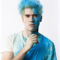
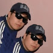
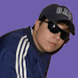

juegagerman
Germán Alejandro Garmendia Aranís
más conocido como JuegaGerman (anteriormente HolaSoyGerman.), es un comediante, cantautor y youtuber chileno que tiene siete canales, uno se llama "HolaSoyGerman.", que cuenta con más de 42 millones de suscriptores siendo el canal más conocido de él. El otro "HolaSoyGerman2", que cuenta con más de 3 millones de suscriptores, el cual es como su primer canal secundario. El tercero que se llama "JuegaGerman", que cuenta con casi 47 millones de suscriptores, el cual es el que maneja actualmente.
canales
<<<<<<< HEAD  =======
principal
canal decundario
canal de musica
canal de twitch
>>>>>>> origin/master
=======
principal
canal decundario
canal de musica
canal de twitch
>>>>>>> origin/master
Lenay
Lenay Chantelle Olsen
conocida simplemente como Lenay o Lele (anteriormente como Lenay Dunn) es una Youtuber, gamer, cantante, conductora de TV y actriz congoleña nacionalizada estadounidense.Nació en la República Democrática del Congo (en ese tiempo Zaire) porque sus padres eran misioneros, en ese tiempo su mejor amiga era un mono, Hailey. Luego, cuando cumplió 4 años, sus padres la llevaron a ella y a su hermana Jayde a vivir a Minnesota, Estados Unidos, donde Lenay tuvo problemas, ya que le costaba hablar inglés, pero con ayuda profesional lo logró.
Canales
<<<<<<< HEAD ======= canal principal canal de musica twitch >>>>>>> origin/masterluzugames
Borja Luzuriaga Vázquez
más conocido como luzugames, LuzuVlogs o simplemente como Luzu, es un youtuber vlogger y gamer de nacionalidad española residente en la ciudad de Los Ángeles, en Estados Unidos.Nació el 3 de agosto de 1985 en la ciudad de Bilbao, al norte de España, en la cual vivió su infancia, junto a sus padres y a su hermano, el cual es 15 meses mayor que el. A partir de los 14 años, se aficionó al surf gracias a un sueño que tuvo.
canales
<<<<<<< HEAD =======
principal
twitch
>>>>>>> origin/master
=======
principal
twitch
>>>>>>> origin/master
Quackity
Alexis
(México, 28 de diciembre de 2000[2][3]), mejor conocido como Quackity, es un youtuber mexicano que se dedica a raids y a vídeos humorísticos. Su canal posee más de 6.000.000 de suscriptores y más de 400.000.000 de reproducciones.
canales
 
=======